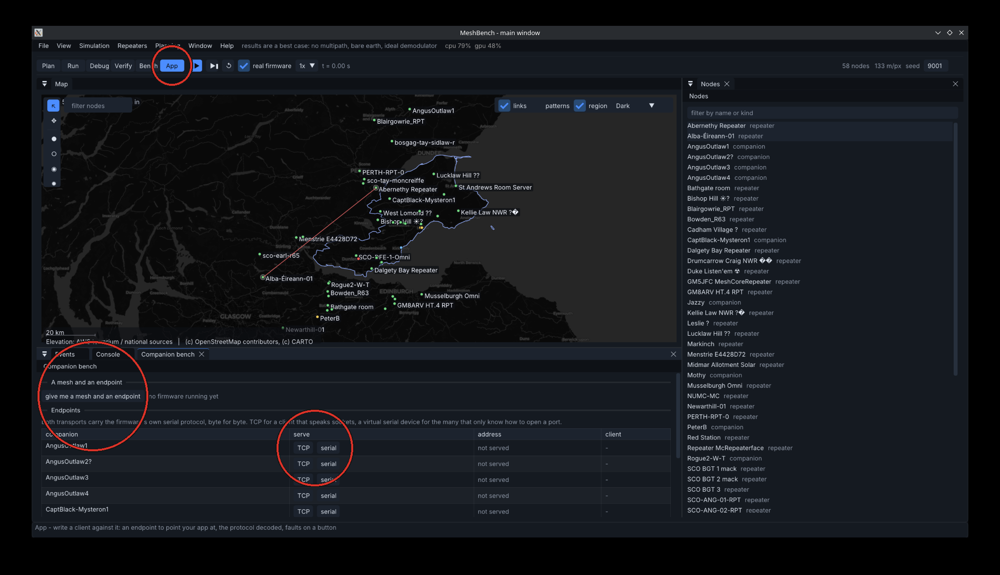

Writing an application against a mesh
One command gives you a running network and an address to point a client at.
meshbench servefixture-fife-strict: 58 nodes, starting firmware
tcp 127.0.0.1:36205
node AngusOutlaw1, 56 nodes running real MeshCore firmware
Point your client at that. Ctrl-C to stop.Connect to that address and you are talking to a companion node's serial protocol, byte for byte as the firmware produces it. Everything you send crosses a simulated radio to real MeshCore firmware on every other node.
What you are connected to
Options
| flag | effect |
|---|---|
-fixture <path> | a different network; the shipped ones are in fixtures/ |
-node <name> | expose a particular companion rather than the first |
-serial | a virtual serial device instead of TCP, for clients that open a port |
-addr 0.0.0.0:4403 | listen on every interface, so a phone can connect |
-quiet | print only the address, for scripting |
In the application itself
The Companion bench panel, in the App view, does the same thing with a button, and adds what a terminal cannot: the protocol decoded in both directions, whether a client is attached, and faults on demand.

Drop every client connection takes the listener away with the connection, so the device disappears the way an unplugged cable does. An application that reconnects cleanly from that is one that survives a phone going to sleep.
Inject a stray frame puts traffic into the stream that the client did not ask for and cannot parse, while it is busy with something else.
Testing against it in a pipeline
meshbench test -fixture fixtures/fixture-fife-strict.json \
-endpoint tcp:AngusOutlaw1 -junit results.xmlRuns the network for a fixed time, holds the endpoint open for your test to drive, checks the network's own assertions, writes JUnit and exits non-zero if anything failed. Everything is native firmware, so the same seed gives the same run and a failure is reproducible.
What differs from hardware
The protocol on the wire is identical: this is the firmware's own serial code producing the bytes. What differs is the radio underneath it, which is a model. Links are cleaner than reality because there is no multipath, no body loss and no interference from outside the network, so treat delivery as a best case.
Nothing about the timing is scaled down: a message that takes two seconds to cross four hops here takes about two seconds on hardware, because airtime is computed the way the firmware computes it.